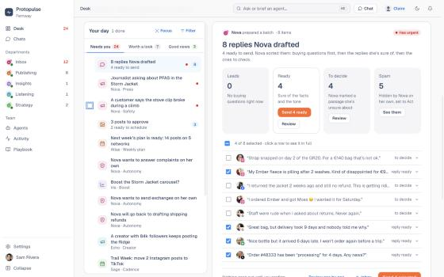
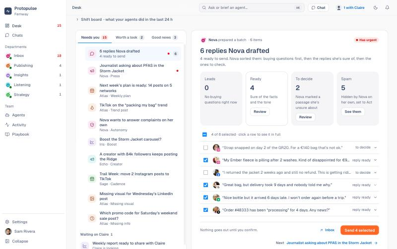
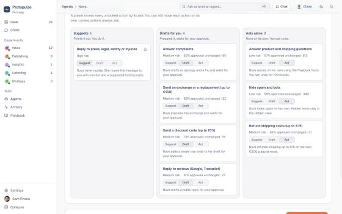
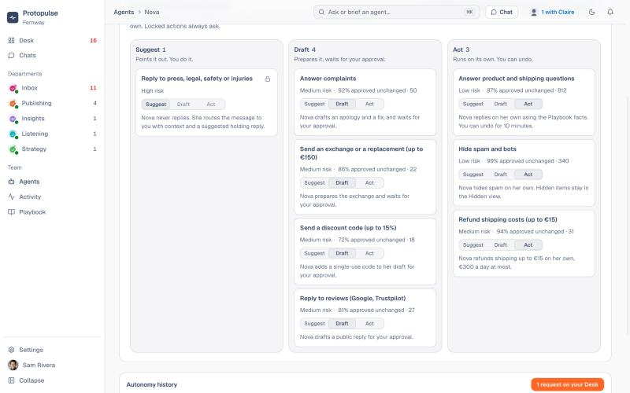
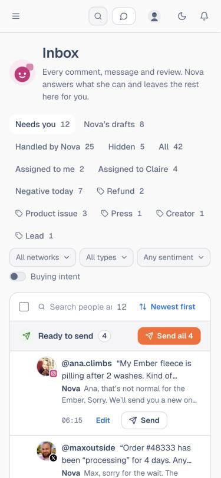
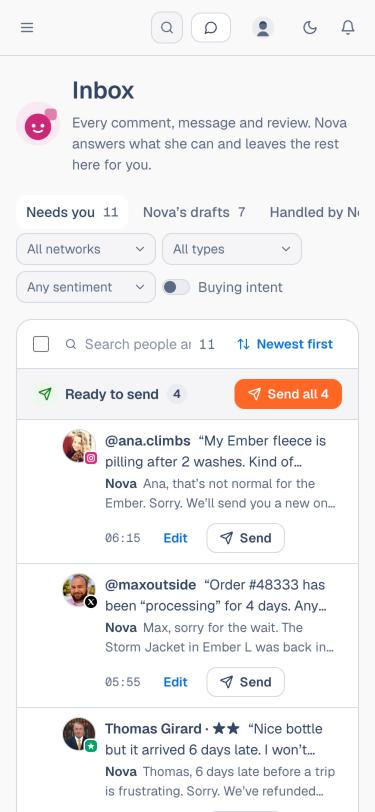
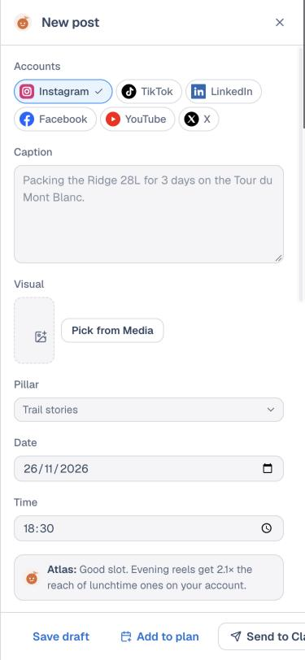
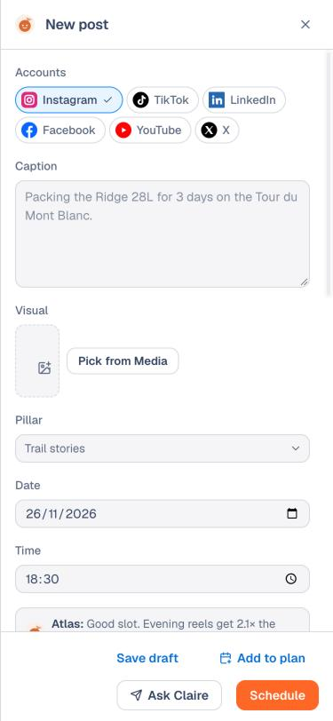

UI quality pass
25 November 2026. Branch claude/ui-quality-pass-20a491, one commit per pass. The inventory is in design-plans/consistency-matrix.md, the screen-by-screen review in design-plans/surface-review.md, and the three pattern changes you approved in design-plans/pattern-proposals.html.
Before and after
| Measure | Before | After | Note |
|---|---|---|---|
| Toast call sites | 35 | 0 | Toasts, pushToast, core/toast and the Toast type are deleted. |
| Undo bar variants | 4 | 1 | UndoBar, also used by the store's scoped Notice. |
| Inline confirm variants | 2 | 1 | InlineConfirm for paid boosts. |
| Counter looks | 5 | 1 | CountBadge, tinted only when it means "needs you". |
style={{ | 155 | 41 | The 41 left all carry runtime values: agent colour, chart geometry, progress, avatar size. |
Hex outside tokens.css | 0 in UI | 0 in UI | The 63 in placeholder photos, illustrations, avatars and mock data stay as a written exception. |
| Off-scale px font sizes | 52 | 0 | Exceptions: chart axis labels at 10 px (SVG charts, heatmap, bars), and network previews, which mimic each network. |
| Border radius literals off the scale | 128 | 0 | What's left is 1–4 px on bars and dots, and 999 px pills. |
| Autonomy vocabularies on one screen | 2 | 1 | Suggest · Draft · Act, in that order everywhere. |
| Orange buttons on a batch card | up to 3 | 1 | Footer only; lanes keep one Review. |
| Contrast failures (AA) | 6 kinds | 0 | Excludes the orange primary at 2.91:1, an ADS choice. |
| Phone overflow at 375 px | 3 screens | 0 | Desk, Inbox group actions, agent profile. Phase 2 missed the Desk one; see "Found on the way". |
| Tests | 28 | 30 | The Desk notice and its undo, plus reopening a dismissal or a decline. left() got its test in pass 1. |
What changed, pattern by pattern
Feedback: no toast
Every confirmation of your own action now appears as one line (
UndoBar) at the top of the list it acted on. On the Desk it sits under the Your day tabs; in Publishing above the calendar; in Listening under the tabs; in Agents above the autonomy board. With an undo, it lasts as long as the journal entry can be undone ("Undo · 9 min left"); otherwise 10 s. Cards, threads and buttons that already show their new state lost their toast. Background work (Claire's verdict, trial over, a new urgent card) arrives silently, and a trial ending now writes a journal line. A duplicate Playbook rule is flagged under the field before you submit it.Dismissals can be undone
A trend, a lesson or a counter-move shows "Dismissed · Undo". A Sage adjustment or a pillar proposal shows "Declined · Undo". The trend button now says "Dismiss" instead of "Not for us".
Buttons
One orange button per area: the batch card keeps only its footer button ("Send 4 selected" / "Add 3 to Playbook"). Bulk delete uses the red delete button. "Add a guardrail" no longer spans the card. Cancel sits 16 px from the action. Filters, segmented controls and select triggers now give slightly when pressed, like buttons.
Links and colour
Text links use action-ink (blue 150, AA). The blue chips that held plain numbers are now neutral, and the green Good news count is neutral too. Clickable calendar posts, month cells and plan items get a blue border on hover. The Inbox draft box now sits on white, so its links pass AA.
Vocabulary
Autonomy is Suggest · Draft · Act on the board, the team card bar and in onboarding (which used to list Act → Suggest). Other wording now matches the word list: Ask Claire, Review on Desk, Approved unchanged, Add N to Playbook. Report titles no longer repeat their type; the type shows in the meta and comes back in the journal, the share line and the downloaded file. Iris and Atlas now agree on timing: Friday 18:00 – 20:00 is the best window, and Atlas schedules at 18:30 inside it.
Escalation lives in the Playbook
Adding, deleting (with Undo), switching on/off and routing a rule now happen only in the Playbook. The agent profile and Settings › Approver show the rules read-only, with "Edit in the Playbook".
Fields and menus
"New label" is a field inside the label popover instead of the browser prompt. Every dropdown trigger uses one style (
.select-btn).Type, spacing, radius
Headings follow one scale: an object page title is 24 px, a list item title 16, a group label 13. Every radius uses a token (6 / 10 / 16 / 20). Inline font sizes, margins and flex values moved to classes with the same values.
Motion
Every movement takes under 250 ms and uses only transform and opacity. That covers card arrival, the detail panel's rise (stagger capped at 60 ms), chat bubbles, the all-clear pop, and pages and tab content, which settle in by 4 px. Progress bars now grow by scaling instead of changing width, and the side rail no longer animates its width. The "live" dot pulses with a transform ring. Thinking keeps its spinner but drops the gradient text sweep. Reduced-motion still cuts all of it.
Empty states
Chats now uses the illustrated empty state like every other screen. Small empty cells inside columns ("No action here", "Drop a task here") stay as text, now in ink-2.
Phones and dark
The Desk list no longer stretches to its longest title. Batch lanes sit two by two. In the Inbox, views and labels share one row that scrolls sideways like the tab bars, so the first conversation moves up from 610 px to 420 px. Segmented controls that are too wide scroll, sheet footers wrap but keep their actions on the right, long anomaly actions wrap inside their button, and the track-record table scrolls. Dark mode had no failures before and none after.
The three screens that changed most
Desk: one orange button, quiet counts


Autonomy board: one vocabulary


Inbox and composer on a phone




Definition of done
- DoneEach pattern has one variant or a written exception
Matrix sections 1–11. Exceptions: ghost Cancel is blue (PROMPT §10), orange primary at 2.91:1, chart axis labels at 10 px, network previews, colour in illustrations and mock data, ambient loops (live dot, spinner).
- DoneZero toast calls, one undo bar, one inline confirm
0 /
UndoBar/InlineConfirm. - DoneInline styles only for dynamic values
41 left, all computed at runtime.
- DoneZero hex outside tokens and illustrations; zero off-scale px fonts
Exceptions as listed above.
- DoneWord list applied
Matrix §11, including autonomy levels and report titles.
- DoneEvery screen at 1440 and 375, light and dark, visible focus, AA
Scripted sweep of 32 routes in all four combinations, with animations frozen so nothing is measured mid-fade. Keyboard focus was checked in phase 2, and the two missing rings were fixed in pass 1. Hover states were read from the CSS, not hovered one by one.
- Done
tsc,vitestand build pass30 tests, before every commit.
- OpenDeployed and live URL checked
maindeploys to GitHub Pages and the merge is yours. The live check happens after the merge. - DoneConsistency items from the UX audit's "Still open"
Toasts, autonomy wording, duplicated batch buttons, escalation in three places, the native "New label" prompt, report titles repeating their type, and Iris vs Atlas on the best slot.
Found on the way
The 375 px sweep in phase 2 under-reported overflow
Mobile emulation widens the layout viewport to fit what overflows, so "page wider than the viewport" was always false. The sweep now measures against the device width. That revealed the Desk list stretching to 545 px, the real cause of D5 (Filter and the Good news count cut off). Fixed in pass 6.
A helper class collided with the top bar
Pass 1 added
.row.topfor top alignment, but.topis already the top bar's class. That made three rows sticky, with the top bar's background, on the autonomy board and the plan header. The helper is now.items-start; fixed in the final commit.
Still open, and why
Proposal: the Desk's first screen
At 1440 px the morning brief and the three highlights fill the first screen, and Your day, where the decisions are, starts below it. Proposal: Your day comes first, and the brief shrinks to one line ("Iris wrote your brief · 228 things handled · Read") that opens it. This changes the journey, not consistency, so it is not built.
Proposal: one place to talk to an agent
Today you talk to agents in four places: Chats, the chat drawer, a card's Discuss thread and ⌘K. Proposal: every conversation is a Chats thread. Discuss opens that card's thread in the drawer, and ⌘K starts or continues a thread. Not built: it changes the journey.
Onboarding drops two edits
The voice edit and the press escalation edit are offered and then not applied (UX audit, "Still open"). This is behaviour, not consistency, so it was left out of this pass.
Insights › Explore network filter
The filter changes the KPIs but not the heatmap or the charts (UX audit). This is data wiring, outside this pass.
A 520 ms stamp
When you settle a Desk card, its stamp holds for 70% of 520 ms, then slides out in about 160 ms. The movement is under the limit; the hold is how long it reads. Left as is.